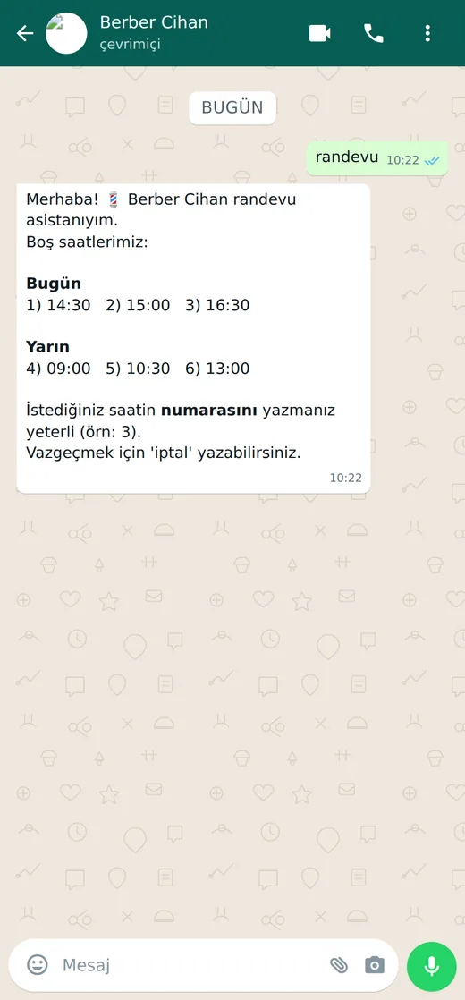
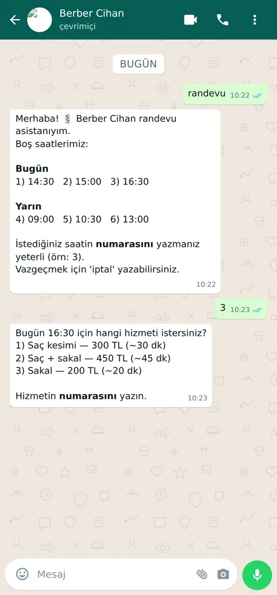
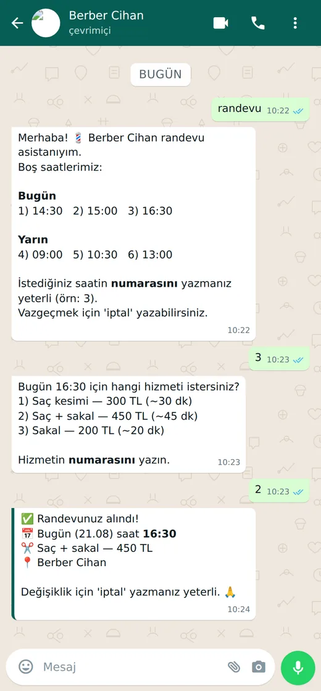
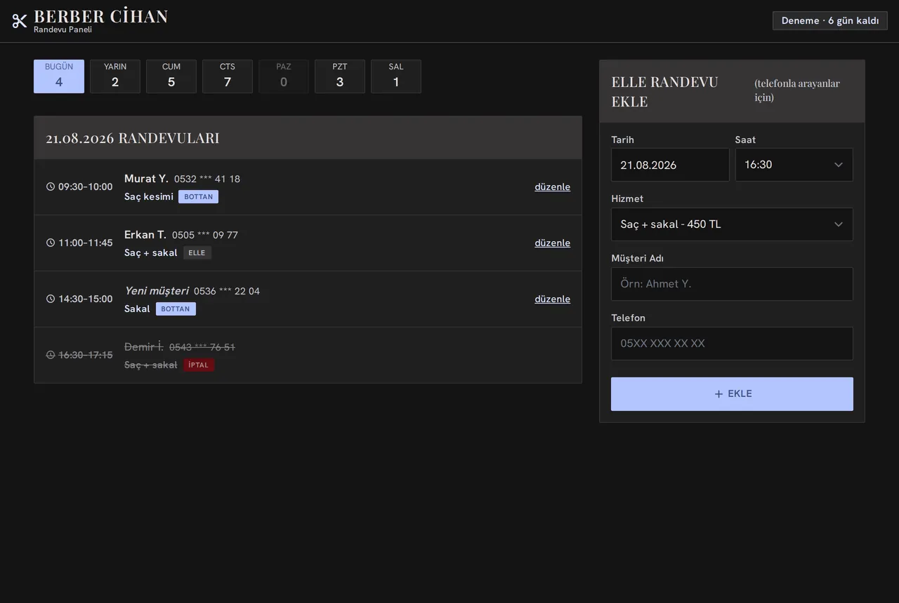

Canlı akış — sesi yok
Yazılım hazır · 29/29 test yeşil
Bu ürün için demo iste
WhatsApp Randevu Botu
Müşteriniz size yazar gibi WhatsApp'tan yazar: boş saatleri görür, numarasını yazar, randevusunu alır. Uygulama indirmez, siteye üye olmaz.
- Gün boyu telefona cevap vermek zorunda kalmazsınız.
- Gece gelen istekler kaybolmaz — sabah tek özet mesajı gelir.
- Panelden saat kapatır, "bu saate sadece sakal" gibi kural koyarsınız.
- İstediğiniz an sohbete kendiniz girip devralabilirsiniz.
- İlk 10 gün ücretsiz; pilot bölge Edirne.

Esnaf paneli — günün randevuları, boş saatler, hizmet ve fiyat listesi